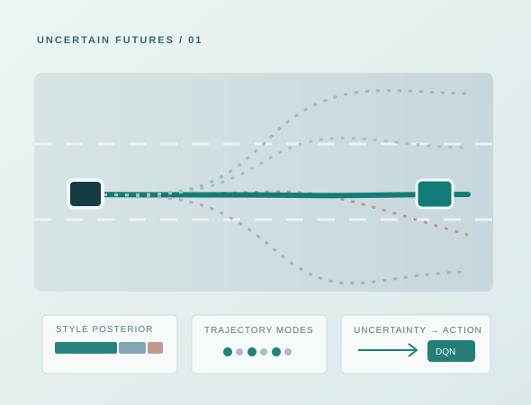

Driving-style-aware prediction for uncertainty-aware decisions.
ACCEPTED · IEEE TRANSACTIONS ON CONSUMER ELECTRONICS · 2026How can driving-style uncertainty and multiple plausible vehicle trajectories be carried into an autonomous driving policy, instead of being discarded at the prediction stage?

Research question
Surrounding vehicles can behave differently even when observed in similar traffic conditions. This makes the uncertainty over their driving style and future motion important for downstream decisions.
Method overview
- Infer a driving-style posterior from observed motion histories.
- Generate a style-conditioned collection of plausible future trajectories with associated probabilities.
- Pass future-prediction information to a reinforcement-learning decision layer.
- Evaluate decision behavior in simulated highway traffic.
My individual contribution
As first author, I developed and evaluated the main style-aware prediction-to-decision pipeline: the driving-style estimation stage, style-conditioned multi-modal prediction, decision-level integration, and the associated simulation experiments.
Research relevance
The central idea is not specific to driving: an autonomous agent should consider plausible uncertain futures when evaluating candidate actions. Generalizing this principle to other embodied systems is a natural research direction.
Paper and artifacts
Zhangyu Huang, Jingde Huang, Dagang Li. “Driving-Style-Aware Generative Trajectory Prediction for Uncertainty-Aware Decision Support in Consumer Automotive Electronics.” Accepted, IEEE Transactions on Consumer Electronics, 2026.
Public DOI, full text, and source-code links are intentionally omitted until available for sharing.